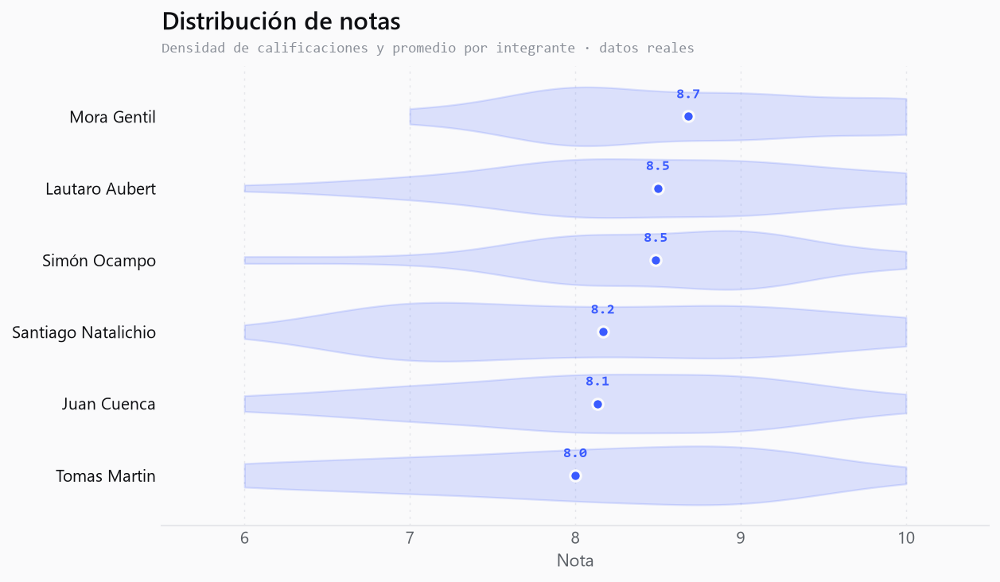
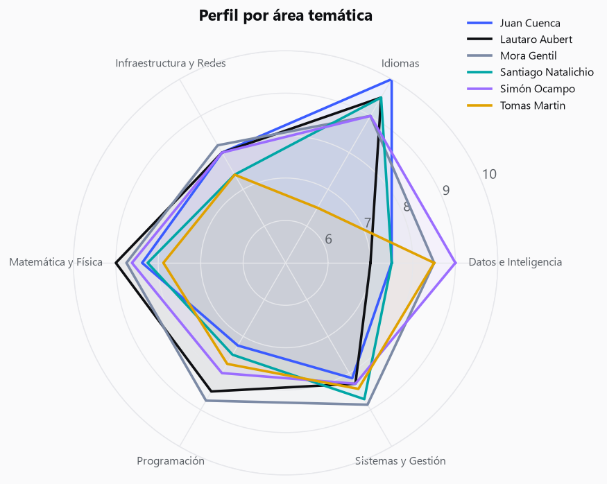

Informe Técnico · TP Integrador de Ciencia de Datos · UTN FRLP 2026
Generador Académico RAG
Un sistema de IA generativa que sintetiza artefactos académicos personalizados anclados en el historial real del grupo y el plan de estudios, mediante un pipeline RAG construido de punta a punta.
01Planificación y metodología
El objetivo es construir un sistema de IA generativa que, alimentado por una base vectorial con el historial académico del grupo más la documentación de la carrera, genere artefactos académicos personalizados: planes de cursada justificados, informes de trayectoria, cartas de pasantía, recomendaciones de orientación, diagnóstico grupal y simulaciones what-if.
El reencuadre central del proyecto fue pasar de un asistente de preguntas (que un SQL o NotebookLM resolverían) a un generador: cada salida es texto nuevo sintetizado, con razonamiento y estilo, no un campo de una tabla. Un SQL responde qué materias podés cursar; este sistema redacta qué conviene y por qué, cruzando notas, correlativas y patrón de rendimiento.
La metodología siguió el pipeline de Ciencia de Datos completo: ingesta y preprocesamiento de un corpus mixto, vectorización, análisis exploratorio, visualización, clustering, generación con control de tono y evaluación cuantitativa del anclaje (grounding).
02Datos, EDA y preprocesamiento
El corpus combina lo estructurado (notas, años y correlatividades) con lo no estructurado (chunks del plan de estudios). Las fuentes son PDFs reales: los estados académicos y exports de exámenes de los seis integrantes del grupo, y el Plan de Sistemas 2023 (correlatividades del Anexo I y equivalencias del Anexo II).
El preprocesamiento crítico fue el join entre el estado académico y el plan: los códigos institucionales no coinciden entre documentos, así que la clave de unión es el nombre de materia normalizado (minúsculas, sin tildes ni puntuación). Se parsearon las 36 obligatorias con sus correlativas, resolviendo casos borde como las integradoras, cuyo nombre se parte en dos líneas. El corpus final tiene 418 documentos: 362 de estados académicos, 36 de correlatividades y 20 chunks del plan.
El historial de notas de exámenes usa los nombres del Plan 2008, mientras que el estado académico ya migró a los del Plan 2023. Para que el cruce no pierda notas aprobadas por equivalencia, incorporamos el Anexo II del plan (régimen de equivalencias 2008↔2023) como tabla de canonización de nombres: toda materia se lleva a su nombre 2023 antes del join, con tolerancia a la truncación de nombres largos del PDF. Tras esa normalización, las materias que quedan sin nota numérica son las de nivelación de ingreso (año 0, sin nota) y las aún no cursadas, como corresponde.
El análisis exploratorio trabaja sobre 199 registros reales de notas (una entrada por materia aprobada con calificación numérica), correspondientes a los seis integrantes. Los promedios van de 7.9 a 8.7, un grupo parejo y de buen rendimiento; las diferencias aparecen al desagregar por área temática, que es lo que explota el diagnóstico grupal.



03Pipeline RAG e implementación
El pipeline se construyó en módulos independientes, cada uno con self-checks:
extract.py PDF → texto (pdfplumber) documents.py texto → documentos + correlatividades; normalizar() = clave de join ingest.py corpus → Chroma; buscar() semántico + obtener() por metadata rag.py chat() al LLM local (Phi-4-mini vía Ollama); fallback si está apagado analisis.py DataFrame de notas reales (6 integrantes) + agregaciones por área figuras.py EDA, radar, clustering (KMeans/PCA), t-SNE de embeddings generar.py 6 generadores de artefactos con control de tono evaluar.py grounding léxico + semántico + comparar_con_sin_rag()
La vectorización usa all-MiniLM-L6-v2 (el embedding por defecto de Chroma, local y offline). El retrieval tiene dos modos: semántico (similitud de embeddings, para lenguaje natural) y determinístico (por metadata, para anclar exactamente las materias aprobadas de un alumno y las correlatividades). La generación corre sobre Phi-4-mini (3.8B) vía Ollama; si Ollama está apagado, la parte RAG sigue funcionando y devuelve el contexto recuperado.
Estrategia de prompting
El sistema instruye al modelo a usar exclusivamente el contexto recuperado y a no inventar notas, materias ni correlatividades. El prompt entrega el contexto como datos citables y una tarea concreta por artefacto. El control de tono (técnico, motivacional, honesto) reescribe el mismo dato en distinto registro: es lo que hace al sistema generativo y no un reporte fijo.
"Generás artefactos personalizados usando exclusivamente los datos del contexto. No inventes notas ni materias; si un dato no está en el contexto, no lo afirmes."
04Clustering y espacio semántico
Sobre el perfil por área (estandarizado) se aplicó KMeans y se proyectó a 2D con PCA para visualizar grupos de perfiles afines. Por separado, se proyectaron las 36 obligatorias con t-SNE sobre sus embeddings: las materias de la misma área caen juntas, lo que valida que el espacio semántico capturó la estructura del plan, condición necesaria para que el recomendador por matching semántico funcione.


05Evaluación: grounding con/sin RAG
Medimos el anclaje con dos métricas complementarias. El grounding léxico es la fracción de tokens informativos de la salida (nombres de materias y notas numéricas) que aparecen literalmente en el contexto: explicable, pero penaliza la paráfrasis. El grounding semántico promedia el máximo coseno entre cada oración de la salida y los fragmentos del contexto (mismos embeddings MiniLM): reconoce la reformulación legítima que el léxico castiga. En la validación, una afirmación anclada obtuvo grounding léxico 1.0 (semántico 0.69) y una inventada 0.0 (semántico 0.34): ambas métricas separan lo anclado de lo inventado.
La demo estrella compara el mismo pedido con RAG (contexto real) contra sin RAG (sin contexto). Sin el conocimiento privado, el modelo no puede anclar: se generaliza o inventa, y el grounding cae. Promediando tres artefactos (plan de cursada, recomendación de orientación e informe de trayectoria) con Phi-4-mini como modelo generador, el grounding léxico pasa de 0.80 con RAG a 0.29 sin RAG —menos de la mitad— y el semántico de 0.64 a 0.52. La brecha léxica es la más elocuente: sin el contexto, la salida casi no menciona materias ni notas reales. Es la evidencia medible de que el aporte del pipeline no es cosmético sino el corazón del producto.
06Análisis crítico y conclusiones
El sistema cumple el objetivo: construimos el pipeline RAG completo (no una caja negra) y lo usamos para generar, no para responder. La demo con/sin RAG y el grounding hacen visible y medible el valor del conocimiento privado.
Limitaciones
El grounding, aun en su versión semántica, no detecta contradicciones sutiles: mide cercanía con el contexto, no consistencia lógica con él. El recomendador por matching se apoya en nombres de materias y correlativas, no en las descripciones reales de cada cátedra. Y el modelo local elegido, Phi-4-mini (3.8B), logra una redacción notablemente más fluida que modelos más chicos manteniéndose offline y reproducible; aun así, por su tamaño puede deslizar imprecisiones puntuales (matizar una nota, nombrar de más), que el grounding y el retrieval determinístico por metadata ayudan a acotar.
Trabajo futuro
Incorporar las descripciones de cátedras y electivas al corpus para que el recomendador compare contenidos y no solo nombres; sumar al grounding una verificación de consistencia (detección de contradicciones, no solo de cercanía); y ofrecer una corrida opcional con un modelo más grande en una máquina con GPU, dejando Phi-4-mini como base local reproducible.
El código, el notebook integrador y la web app de demostración en vivo acompañan este informe como entregables ejecutables.